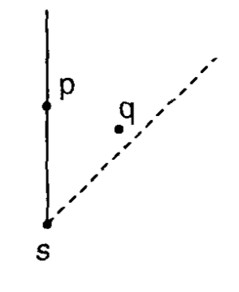
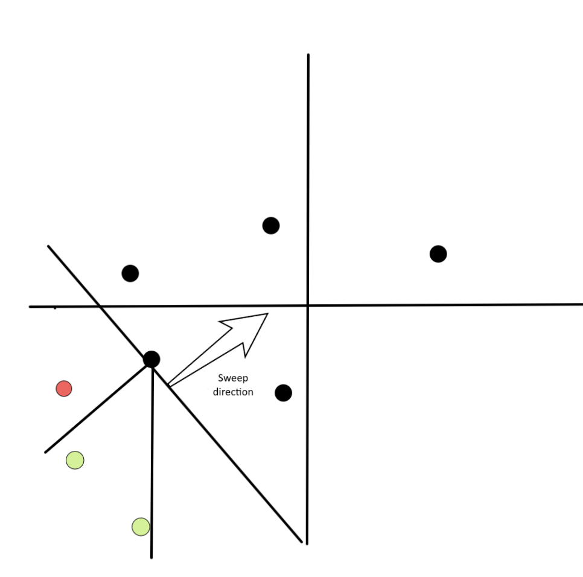

ম্যানহাটন ডিস্ট্যান্স¶
সংজ্ঞা¶
সমতলের বিন্দু $p$ ও $q$-এর জন্য, আমরা তাদের মধ্যে দূরত্বকে তাদের $x$ ও $y$ স্থানাঙ্কের পার্থক্যের যোগফল হিসেবে সংজ্ঞায়িত করতে পারি:
এভাবে সংজ্ঞায়িত দূরত্ব তথাকথিত ম্যানহাটন (ট্যাক্সিক্যাব) জ্যামিতির সাথে সম্পর্কিত, যেখানে বিন্দুগুলোকে একটি সুপরিকল্পিত শহরের (যেমন ম্যানহাটন) ছেদবিন্দু হিসেবে বিবেচনা করা হয়, যেখানে আপনি শুধুমাত্র অনুভূমিক বা উল্লম্বভাবে রাস্তায় চলাচল করতে পারেন, নিচের ছবিতে যেমন দেখানো হয়েছে:

এই ছবিগুলো একটি কালো বিন্দু থেকে অন্যটিতে যাওয়ার কিছু ক্ষুদ্রতম পথ দেখায়, সবগুলোর দৈর্ঘ্য $12$।
এই দূরত্ব দিয়ে কিছু আকর্ষণীয় কৌশল ও অ্যালগরিদম প্রয়োগ করা যায়, এবং আমরা এখানে তার কয়েকটি দেখাব।
ম্যানহাটন ডিস্ট্যান্সে সর্বাধিক দূরবর্তী বিন্দু জোড়া¶
$n$ টি বিন্দু $P$ দেওয়া আছে, আমরা এমন বিন্দু জোড়া $p,q$ খুঁজতে চাই যারা সবচেয়ে দূরে, অর্থাৎ $|x_p - x_q| + |y_p - y_q|$ সর্বাধিক করতে চাই।
প্রথমে এক মাত্রায় চিন্তা করি, তাই $y=0$। মূল পর্যবেক্ষণ হলো আমরা ব্রুট ফোর্সে দেখতে পারি $|x_p - x_q|$ কি $x_p - x_q$ নাকি $-x_p + x_q$-এর সমান, কারণ আমরা যদি পরম মানের "চিহ্ন ভুল করি", আমরা শুধু একটি ছোট মান পাব, তাই এটি উত্তরকে প্রভাবিত করতে পারে না। আরও আনুষ্ঠানিকভাবে, এটি সত্য যে:
সুতরাং, উদাহরণস্বরূপ, আমরা চেষ্টা করতে পারি $p$-কে এমনভাবে নিতে যে $x_p$-এ যোগ চিহ্ন থাকে, এবং তখন $q$-তে অবশ্যই ঋণাত্মক চিহ্ন থাকবে। এভাবে আমরা খুঁজতে চাই:
লক্ষ্য করুন যে আমরা এই ধারণাটি ২ (বা আরও বেশি!) মাত্রায় প্রসারিত করতে পারি। $d$ মাত্রার জন্য, আমাদের $2^d$ টি সম্ভাব্য চিহ্নের মান ব্রুট ফোর্সে দেখতে হবে। উদাহরণস্বরূপ, যদি আমরা $2$ মাত্রায় থাকি এবং ব্রুট ফোর্সে $p$-তে উভয় যোগ চিহ্ন ধরি তাহলে আমরা খুঁজতে চাই:
যেহেতু আমরা $p$ ও $q$ কে স্বাধীন করেছি, এখন রাশিটি সর্বাধিক করে এমন $p$ ও $q$ খুঁজে পাওয়া সহজ।
নিচের কোড এটিকে $d$ মাত্রায় সাধারণীকরণ করে এবং $O(n \cdot 2^d \cdot d)$-এ চলে।
long long ans = 0;
for (int msk = 0; msk < (1 << d); msk++) {
long long mx = LLONG_MIN, mn = LLONG_MAX;
for (int i = 0; i < n; i++) {
long long cur = 0;
for (int j = 0; j < d; j++) {
if (msk & (1 << j)) cur += p[i][j];
else cur -= p[i][j];
}
mx = max(mx, cur);
mn = min(mn, cur);
}
ans = max(ans, mx - mn);
}
বিন্দু ঘোরানো এবং চেবিশেভ ডিস্ট্যান্স¶
এটি সুপরিচিত যে সব $m, n \in \mathbb{R}$-এর জন্য,
এটি প্রমাণ করতে, আমাদের শুধু $m$ ও $n$-এর চিহ্ন বিশ্লেষণ করতে হবে। এবং এটি একটি অনুশীলনী হিসেবে রেখে দেওয়া হলো।
আমরা এই সমীকরণটি ম্যানহাটন ডিস্ট্যান্স সূত্রে প্রয়োগ করে পাই
পূর্ববর্তী সমীকরণের শেষ রাশিটি হলো $(x_1 + y_1, y_1 - x_1)$ ও $(x_2 + y_2, y_2 - x_2)$ বিন্দুগুলোর চেবিশেভ ডিস্ট্যান্স। এর অর্থ হলো, রূপান্তর
প্রয়োগ করার পর, $p$ ও $q$ বিন্দুদ্বয়ের মধ্যে ম্যানহাটন ডিস্ট্যান্স $\alpha(p)$ ও $\alpha(q)$-এর মধ্যে চেবিশেভ ডিস্ট্যান্সে পরিণত হয়।
এছাড়াও, আমরা বুঝতে পারি যে $\alpha$ হলো একটি স্পাইরাল সিমিলারিটি (কেন্দ্র $O$ সম্পর্কে সমতলের ঘূর্ণন এবং তারপর একটি ডাইলেশন) যার কেন্দ্র $(0, 0)$, ঘড়ির কাঁটার দিকে $45^{\circ}$ ঘূর্ণন কোণ এবং $\sqrt{2}$ দ্বারা ডাইলেশন।
রূপান্তরটি কল্পনা করতে সাহায্যকারী একটি ছবি এখানে:

ম্যানহাটন মিনিমাম স্প্যানিং ট্রি¶
ম্যানহাটন MST সমস্যাটি হলো, সমতলে কিছু বিন্দু দেওয়া আছে, সব বিন্দু সংযুক্ত করে এমন এজগুলো খুঁজে বের করুন যাদের মোট ওজনের যোগফল সর্বনিম্ন। দুটি বিন্দু সংযোগকারী একটি এজের ওজন হলো তাদের ম্যানহাটন ডিস্ট্যান্স। সরলতার জন্য, আমরা ধরে নিচ্ছি সব বিন্দুর অবস্থান ভিন্ন। এখানে আমরা প্রতিটি বিন্দুর প্রতিটি অক্ট্যান্টে তার নিকটতম প্রতিবেশী খুঁজে $O(n \log{n})$-এ MST বের করার একটি উপায় দেখাচ্ছি, নিচের ছবিতে যেমন দেখানো হয়েছে। এটি আমাদের $O(n)$ টি প্রার্থী এজ দেবে, যা, আমরা নিচে দেখাব, MST ধারণ করার নিশ্চয়তা দেয়। চূড়ান্ত ধাপ হলো কোনো স্ট্যান্ডার্ড MST, যেমন ডিসজয়েন্ট সেট ইউনিয়ন ব্যবহার করে ক্রুস্কাল অ্যালগরিদম ব্যবহার করা।
 *একটি বিন্দু S-এর সাপেক্ষে ৮টি অক্ট্যান্ট*
*একটি বিন্দু S-এর সাপেক্ষে ৮টি অক্ট্যান্ট*
এখানে দেখানো অ্যালগরিদমটি প্রথম উপস্থাপিত হয়েছিল H. Zhou, N. Shenoy, ও W. Nichollos (২০০২)-এর একটি গবেষণাপত্রে। আরেকটি পরিচিত অ্যালগরিদমও আছে যা J. Stolfi-এর ডিভাইড অ্যান্ড কনকার পদ্ধতি ব্যবহার করে, যেটিও খুব আকর্ষণীয় এবং শুধুমাত্র প্রতিটি অক্ট্যান্টে নিকটতম প্রতিবেশী খুঁজে বের করার পদ্ধতিতে ভিন্ন। উভয়ের কমপ্লেক্সিটি একই, তবে এখানে উপস্থাপিতটি ইমপ্লিমেন্ট করা সহজ এবং এর কনস্ট্যান্ট ফ্যাক্টর কম।
প্রথমে, চলুন বুঝি কেন শুধুমাত্র প্রতিটি অক্ট্যান্টে নিকটতম প্রতিবেশী বিবেচনা করাই যথেষ্ট। ধারণাটি হলো দেখানো যে একটি বিন্দু $s$ এবং একই অক্ট্যান্টে অন্য দুটি বিন্দু $p$ ও $q$-এর জন্য, $d(p, q) < \max(d(s, p), d(s, q))$। এটি গুরুত্বপূর্ণ, কারণ এটি দেখায় যে যদি কোনো MST থাকত যেখানে $s$ $p$ ও $q$ উভয়ের সাথে সংযুক্ত, আমরা এই এজগুলোর একটি মুছে $(p,q)$ এজ যোগ করতে পারতাম, যা মোট খরচ কমিয়ে দিত। এটি প্রমাণ করতে, আমরা সাধারণতা হারানো ছাড়া ধরে নিই $p$ ও $q$ অক্ট্যান্ট $R_1$-এ আছে, যা সংজ্ঞায়িত: $x_s \leq x$ এবং $x_s - y_s > x - y$, এবং তারপর কিছু কেসওয়ার্ক করি। নিচের ছবিটি কেন এটি সত্য তার কিছু অন্তর্দৃষ্টি দেয়।

*স্বজ্ঞাতভাবে, অক্ট্যান্টের সীমাবদ্ধতা এমন করে যে $p$ ও $q$ উভয়ই $s$-এর কাছাকাছি হওয়া অসম্ভব তুলনায় একে অপরের কাছাকাছি*অতএব, মূল প্রশ্ন হলো প্রতিটি $n$ বিন্দুর প্রতিটি অক্ট্যান্টে নিকটতম প্রতিবেশী কীভাবে খুঁজে বের করা যায়।
O(n log n)-এ প্রতিটি অক্ট্যান্টে নিকটতম প্রতিবেশী¶
সরলতার জন্য আমরা NNE অক্ট্যান্টে (উপরের ছবিতে $R_1$) ফোকাস করি। অন্য সব দিক একই অ্যালগরিদমে ইনপুট ঘুরিয়ে পাওয়া যায়।
আমরা একটি সুইপ লাইন পদ্ধতি ব্যবহার করব। আমরা বিন্দুগুলো দক্ষিণ-পশ্চিম থেকে উত্তর-পূর্ব দিকে প্রক্রিয়া করি, অর্থাৎ অ-ক্রমহ্রাসমান $x + y$ অনুযায়ী। আমরা এমন বিন্দুগুলোর একটি সেটও রাখি যাদের এখনও নিকটতম প্রতিবেশী পাওয়া যায়নি, যাকে আমরা "অ্যাক্টিভ সেট" বলি। অ্যালগরিদমটি কল্পনা করতে সাহায্য করার জন্য আমরা নিচে ছবি যোগ করছি।

*কালো তীর দিয়ে সুইপ লাইনের দিক দেখানো হয়েছে। এই রেখার নিচের সব বিন্দু অ্যাক্টিভ সেটে আছে, এবং উপরের বিন্দুগুলো এখনও প্রক্রিয়া করা হয়নি। সবুজে দেখা যাচ্ছে প্রক্রিয়াকৃত বিন্দুর অক্ট্যান্টে থাকা বিন্দুগুলো। লালে অনুসন্ধিত অক্ট্যান্টে নেই এমন বিন্দুগুলো।* *এই ছবিতে বিন্দু $p$ প্রক্রিয়া করার পরের অ্যাক্টিভ সেট দেখা যাচ্ছে। লক্ষ্য করুন পূর্ববর্তী ছবির ২টি সবুজ বিন্দুর উত্তর-উত্তর-পূর্ব অক্ট্যান্টে $p$ ছিল এবং তারা আর অ্যাক্টিভ সেটে নেই, কারণ তারা ইতিমধ্যে তাদের নিকটতম প্রতিবেশী পেয়ে গেছে।*
*এই ছবিতে বিন্দু $p$ প্রক্রিয়া করার পরের অ্যাক্টিভ সেট দেখা যাচ্ছে। লক্ষ্য করুন পূর্ববর্তী ছবির ২টি সবুজ বিন্দুর উত্তর-উত্তর-পূর্ব অক্ট্যান্টে $p$ ছিল এবং তারা আর অ্যাক্টিভ সেটে নেই, কারণ তারা ইতিমধ্যে তাদের নিকটতম প্রতিবেশী পেয়ে গেছে।*
যখন আমরা একটি নতুন বিন্দু $p$ যোগ করি, প্রতিটি বিন্দু $s$ যার অক্ট্যান্টে $p$ আছে তার জন্য আমরা নিরাপদে $p$ কে নিকটতম প্রতিবেশী হিসেবে নির্ধারণ করতে পারি। এটি সত্য কারণ তাদের দূরত্ব $d(p,s) = |x_p - x_s| + |y_p - y_s| = (x_p + y_p) - (x_s + y_s)$, কারণ $p$ উত্তর-উত্তর-পূর্ব অক্ট্যান্টে। যেহেতু সর্টিং ধাপের কারণে পরবর্তী সব বিন্দুর $x + y$ ছোট হবে না, $p$-এর ক্ষুদ্রতম দূরত্ব হওয়া নিশ্চিত। তারপর আমরা এই সব বিন্দু অ্যাক্টিভ সেট থেকে সরিয়ে, অবশেষে $p$ কে অ্যাক্টিভ সেটে যোগ করতে পারি।
পরবর্তী প্রশ্ন হলো কীভাবে দক্ষতার সাথে খুঁজে বের করা যায় কোন বিন্দু $s$-এর উত্তর-উত্তর-পূর্ব অক্ট্যান্টে $p$ আছে। অর্থাৎ, কোন বিন্দু $s$ নিম্নলিখিত শর্ত পূরণ করে:
- $x_s \leq x_p$
- $x_p - y_p < x_s - y_s$
যেহেতু অ্যাক্টিভ সেটের কোনো বিন্দু অন্যটির $R_1$ অঞ্চলে নেই, আমরা এও পাই যে অ্যাক্টিভ সেটের দুটি বিন্দু $q_1$ ও $q_2$-এর জন্য, $x_{q_1} \neq x_{q_2}$ এবং তাদের ক্রম থেকে $x_{q_1} < x_{q_2} \implies x_{q_1} - y_{q_1} \leq x_{q_2} - y_{q_2}$।
আপনি উপরের ছবিগুলোতে $x - y$-এর ক্রমকে উত্তর-পশ্চিম থেকে দক্ষিণ-পূর্বে যাওয়া একটি "সুইপ লাইন" হিসেবে কল্পনা করে এটি দেখতে পারেন, তাই আঁকা লাইনের সাথে লম্ব।
এর মানে হলো আমরা যদি অ্যাক্টিভ সেটকে $x$ অনুযায়ী সাজানো রাখি তাহলে প্রার্থী $s$ বিন্দুগুলো পরপর অবস্থিত। তখন আমরা $x_s \leq x_p$ সর্ববৃহৎটি খুঁজে বের করতে পারি এবং $x$-এর ক্রমহ্রাসমান ক্রমে বিন্দুগুলো প্রক্রিয়া করি যতক্ষণ না দ্বিতীয় শর্ত $x_p - y_p < x_s - y_s$ ভঙ্গ হয় (আমরা আসলে $x_p - y_p = x_s - y_s$ অনুমতি দিতে পারি এবং এটি সমান স্থানাঙ্ক বিশিষ্ট বিন্দুর ক্ষেত্র সামলায়)। লক্ষ্য করুন যেহেতু আমরা প্রক্রিয়া করার পরপরই সেট থেকে সরিয়ে দিই, এটির অ্যামোর্টাইজড কমপ্লেক্সিটি হবে $O(n \log(n))$। এখন আমরা উত্তর-পূর্ব দিকে নিকটতম বিন্দু পেয়ে গেছি, বিন্দুগুলো ঘুরিয়ে পুনরাবৃত্তি করি। দেখানো সম্ভব যে এভাবে আমরা আসলে দক্ষিণ-পশ্চিম দিকের নিকটতম বিন্দুও পাই, তাই ৮ বারের বদলে মাত্র ৪ বার পুনরাবৃত্তি করলেই চলে।
সারসংক্ষেপে আমরা:
- বিন্দুগুলো $x + y$-এর অ-ক্রমহ্রাসমান ক্রমে সাজাই;
- প্রতিটি বিন্দুর জন্য, $x \leq x_p$ সর্ববৃহৎ $x$ বিশিষ্ট বিন্দু থেকে শুরু করে অ্যাক্টিভ সেটের উপর ইটারেট করি, এবং $x_p - y_p \geq x_s - y_s$ হলে লুপ ব্রেক করি। প্রতিটি বৈধ বিন্দু $s$-এর জন্য আমাদের তালিকায় এজ $(s,p, d(s,p))$ যোগ করি;
- বিন্দু $p$ কে অ্যাক্টিভ সেটে যোগ করি;
- বিন্দুগুলো ঘুরিয়ে সব অক্ট্যান্ট ইটারেট না করা পর্যন্ত পুনরাবৃত্তি করি।
- MST পেতে এজগুলোর তালিকায় ক্রুস্কাল অ্যালগরিদম প্রয়োগ করি।
নিচে আপনি একটি ইমপ্লিমেন্টেশন পাবেন, KACTL-এর ইমপ্লিমেন্টেশনের ভিত্তিতে।
struct point {
long long x, y;
};
// Returns a list of edges in the format (weight, u, v).
// Passing this list to Kruskal algorithm will give the Manhattan MST.
vector<tuple<long long, int, int>> manhattan_mst_edges(vector<point> ps) {
vector<int> ids(ps.size());
iota(ids.begin(), ids.end(), 0);
vector<tuple<long long, int, int>> edges;
for (int rot = 0; rot < 4; rot++) { // for every rotation
sort(ids.begin(), ids.end(), [&](int i, int j){
return (ps[i].x + ps[i].y) < (ps[j].x + ps[j].y);
});
map<int, int, greater<int>> active; // (xs, id)
for (auto i : ids) {
for (auto it = active.lower_bound(ps[i].x); it != active.end();
active.erase(it++)) {
int j = it->second;
if (ps[i].x - ps[i].y > ps[j].x - ps[j].y) break;
assert(ps[i].x >= ps[j].x && ps[i].y >= ps[j].y);
edges.push_back({(ps[i].x - ps[j].x) + (ps[i].y - ps[j].y), i, j});
}
active[ps[i].x] = i;
}
for (auto &p : ps) { // rotate
if (rot & 1) p.x *= -1;
else swap(p.x, p.y);
}
}
return edges;
}
অনুশীলন সমস্যা¶
- AtCoder Beginner Contest 178E - Dist Max
- CodeForces 1093G - Multidimensional Queries
- CodeForces 944F - Game with Tokens
- AtCoder Code Festival 2017D - Four Coloring
- The 2023 ICPC Asia EC Regionals Online Contest (I) - J. Minimum Manhattan Distance
- Petrozavodsk Winter Training Camp 2016 Contest 4 - B. Airports